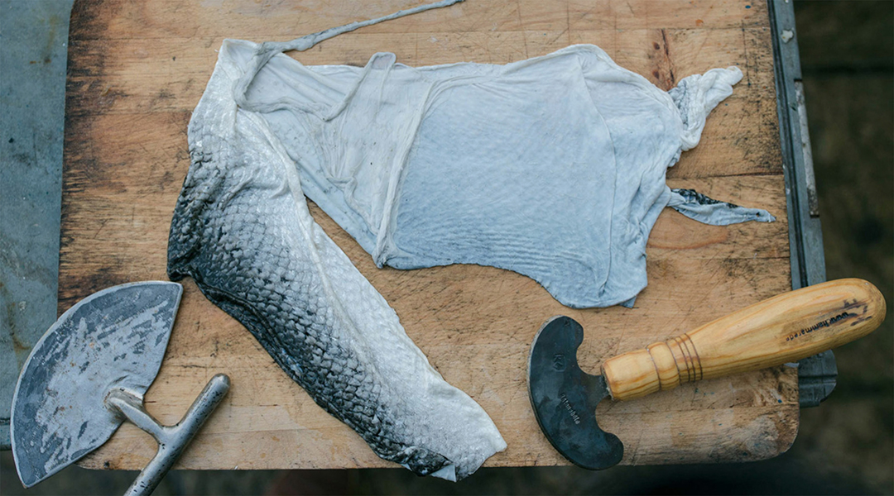
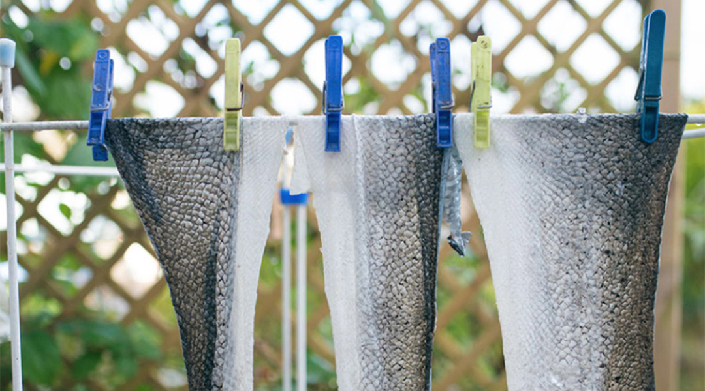

Step 1: Catching the fish

Step 2: Fileting the fish

Step 3: Cleansing the skin

Step 4: Drying the skin

Step 5: Coloring the skin


Climate change is a grave threat for the ocean and the life it shelters, and we as a society needs to adjust our consumption and start using more environmentally friendly materials if we wish to continue reaping the benefits of the sea.

For a long time, the generations that grew up along these shores were never used to greatfinancial wealth, and lived from hand to mouth. Most of them probably never saw any diamonds or gemstones, but they had something equally beautiful: the glimmer of the catch as the fisherman hoists it up from the depths, revealing the nourishing contents that would provide for the family back home.